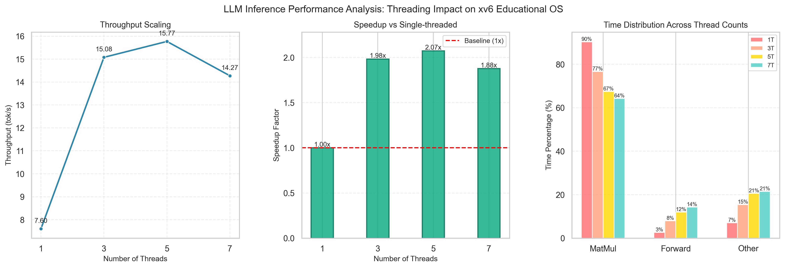

LLM Inference Optimization in xv6 Educational OS
Engineered a POSIX-compliant Shared Memory (SHM) subsystem for the xv6 kernel
to enable zero-copy, persistent caching of Large Language Model weights (~100MB), eliminating
redundant network transfers. Implemented custom threading primitives from scratch
and parallelized the inference engine, achieving 16.2 tokens/sec
(up from ~7 tokens/sec). Successfully ported the LLaMA-2 inference engine to xv6,
resolving system-level challenges and demonstrating comprehensive system building from kernel up to application layer.
Documented the entire process in a comprehensive book explaining the methodology and implementation details.
Key Achievements:
- Designed a cycle-accurate performance profiling library tracking call hierarchies, identifying matrix multiplication as the dominant bottleneck (87-92% of inference time).
- Reduced subsequent inference latency from ~80s to sub-second through zero-copy caching.
- Implemented custom threading primitives and parallelized inference, achieving 2.3x throughput improvement (7 → 16.2 tokens/sec).
- Resolved stack overflow issues via iterative quicksort and replaced Linux dependencies for minimal OS compatibility.
Kaggle Competition: Safe Driver Prediction - 1st Place
Achieved 1st place (Private Leaderboard AUROC: 0.64671) in the Enhanced Safe Driver
Prediction Kaggle competition by developing a stacking ensemble of gradient boosting models
(XGBoost, LightGBM, CatBoost) with a logistic
regression meta-learner.
Key Achievements:
- Outperformed 100+ competitors through systematic model evaluation and comprehensive data exploration.
- Developed refined preprocessing strategy handling extensive missing data and non-predictive features.
- Demonstrated expertise in ensemble methods, feature engineering, and highly imbalanced tabular data.
Modular 2D Physics & Orbital Mechanics Engine
Architected and built a modular 2D physics engine from scratch in C++, implementing
rigid body dynamics, velocity-based movement, and AABB collision detection/resolution. Extended the
core engine into an orbital mechanics simulation to model gravitational N-body interactions, applying
vector mathematics and numerical integration.
Key Achievements:
- Developed a real-time visualization layer using SFML for interactive simulation validation.
- Showcases proficiency in low-level system design, physics algorithms, and graphics programming.